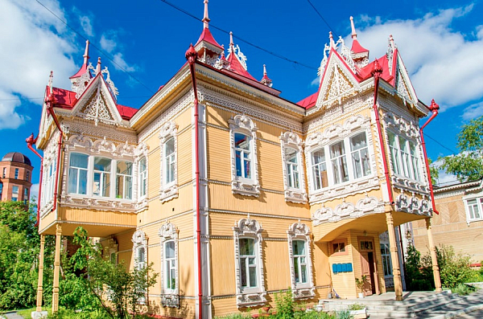
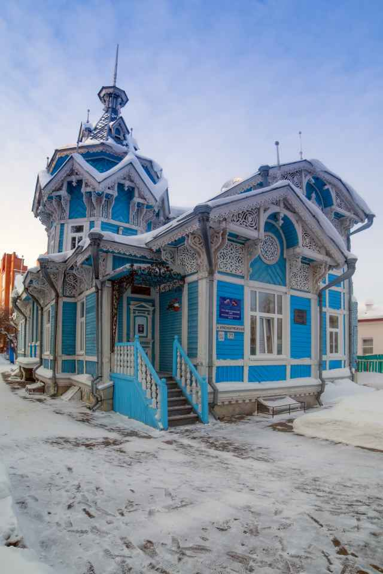

Томск — крупнейший в России заповедник деревянного зодчества. Местные купцы соревновались в богатстве отделки своих домов, создавая уникальные узоры («томское кружево»).
«Дом с жар-птицами» (ул. Красноармейская, 67/1)
Шедевр русского стиля, построенный в 1903 году архитектором Петром Федоровским для купца Леонтия Желябо. По легенде, это был свадебный подарок дочери. Главное украшение — резные птицы, венчающие крышу, и сложные наличники. Объект культурного наследия федерального значения.

«Дом с шатром» (ул. Красноармейская, 71 / ул. Белинского, 15)
Усадьба купца Голованова. Это здание напоминает сказочный древнерусский терем. Его венчает высокая башня-шатер, а фасады богато украшены пропильной резьбой. Сегодня здесь располагается Дом науки имени П.И. Макушина.

«Дом с драконами» (ул. Красноармейская, 68)
Яркий пример стиля модерн (1910-е гг.). Архитектор Владислав Оржешко украсил кровлю семью бетонными головами диковинных драконов, напоминающих скандинавские руны. Здание выглядит мистически и контрастирует с традиционным деревянным декором соседних домов.

Музей деревянного зодчества (пр. Кирова, 7)
Расположен в особняке архитектора Андрея Крячкова. Внутри собрана уникальная коллекция: фрагменты наличников, карнизов, старинные двери и инструменты плотников. Это место объясняет, как именно создавалось «томское кружево».